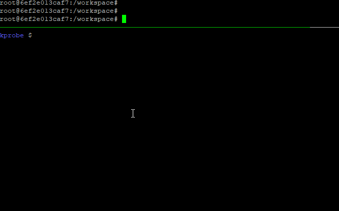
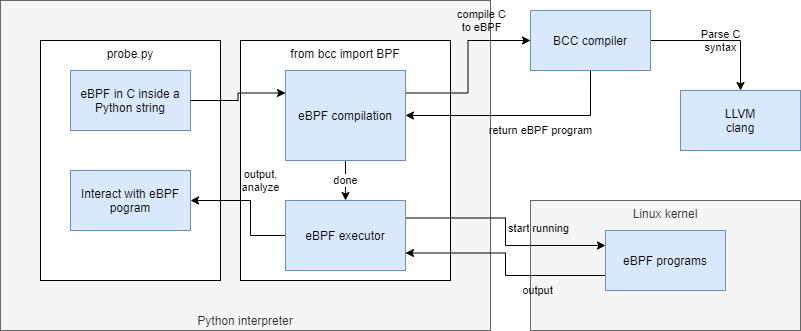

Linux kernel probing
Kernel probes allow you to dynamically attach debug points to the kernel (or even to extend it to some extent with persistent hooks). You can attach not just to syscalls, but also to many functions inside the kernel (they have to be exported functions though).
Dynamically means, that you don’t have to recompile the kernel and/or restart your computer - it’s pretty cool!

Disclaimer: these are my notes about learning about kprobes today, so I might not know what I’m talking about.
Background
Linux kernel probes (kprobe) are implemented using eBPF.
eBPF is kind of like BPF v2 and apparently people just shorten eBPF to BPF. So in common use BPF can mean the “classic” version or the newer eBPF. (Or technically, the legacy/classic BPF was retroactively renamed to cBPF which is not confusing at all.)
eBPF is also used for many more things like networking stuff - I think it’s eventually going to be a kind of generic VM inside the kernel for many types of use cases.
Here’s how the pieces interact:

(Drawing credit: Brendan Gregg - he has really extensive information on eBPF tracing)
What can I use it for?
My use case was debugging why my FUSE implementation deadlocks - so I went on to (successfully) insert log statements (“now in this function”) to the FUSE driver to try to understand the code flow which leads to my issue.
But in this post we’re keeping it simple to get you started as quickly as possible.
Prerequisite tools
Instructions taken from here: eBPF and bcc: Your First Program.
(I tried reading sematext’s post
first, but the information was very sparse and I couldn’t even match the include paths in
the compile command to paths in my linux-headers tree)
tl;dr: here’s all that I had to do on Ubuntu:
$ sudo apt-key adv --keyserver keyserver.ubuntu.com --recv-keys 4052245BD4284CDD
$ echo "deb https://repo.iovisor.org/apt/$(lsb_release -cs) $(lsb_release -cs) main" | sudo tee /etc/apt/sources.list.d/iovisor.list
$ sudo apt update
$ sudo apt install bcc-tools python3-bcc linux-headers-$(uname -r)
About the dependencies:
- IO Visor hosts BCC which is “BPF compiler collection” (I guess the name is homage to GCC)
- So BCC ≈ eBPF compiler
- BCC needs Linux headers to be able to compile your program against your kernel version.
python3-bccis not required to compile BPF programs, but it makes compile + attach + process results loop easier.
Your first program
All credit to Ricardo´s article that I based this example on!
I changed it to include a timestamp and changed the syscall to something that happens
rarely but which I could trigger easily (syncfs).
(p.s. Linux syscall table)
from bcc import BPF
from datetime import datetime
BPF_PROGRAM = r"""
int hello(void *ctx) {
bpf_trace_printk("syncfs called\n");
return 0;
}
"""
bpf = BPF(text=BPF_PROGRAM)
bpf.attach_kprobe(event=bpf.get_syscall_fnname("syncfs"), fn_name="hello")
while True:
try:
(_, _, _, _, _, msg_b) = bpf.trace_fields()
msg = msg_b.decode('utf8')
print(datetime.now().strftime("%H:%M:%S"), msg)
except ValueError:
continue
except KeyboardInterrupt:
break
Run this with $ python3 probe.py (you probably need sudo). It shouldn’t print anything
until you trigger the syscall from another program.
What does the code above do?
Let’s unpack this a bit. You’re seeing C code inside a string in a Python program. The Python module for bcc will call the BCC compiler to use LLVM to compile this C code into eBPF code, which the bcc Python module will then ask the Linux kernel to execute. Same mumbo jumbo as a drawing:

The important thing to note is that once the eBPF program is compiled, it’s essentially a static build artefact which in itself could be attached to the kernel, without needing the BCC, LLVM compilers or the Python-based toolkit. This all dynamic stuff is here just to help you iterate on building these programs quickly.
Triggering the probe
Now trigger it from another shell:
$ sync --file-system /
You should see this in the Python command:
13:18:24 syncfs called
This worked for me. I stopped the Python program, commented out the attach_kprobe line and
started it again, expecting that when I ran the script again, I keep receiving the events.
But no, the probes seem ephemeral and unique to the process that attached them. Upon further
digging, I came across explanation (read the Lifecycle section).
Filtering or accessing function arguments
Let’s say that we want to hook a syscall that is called very frequenctly - kernel’s open()
syscall, and we want to filter what we log at the hook level.
Sure, you could do the filtering in userspace as well, but it’s important to learn how to access the function arguments.
Let’s make it log only an exact process’s open calls - and while we’re at it, let’s also
learn how to access the function parameters - we need it to add the filename of open()
to the log message).
open is defined in Linux kernel like this:
SYSCALL_DEFINE3(open, const char __user *, filename, int, flags, umode_t, mode)
{
return ksys_open(filename, flags, mode);
}
So we know that the first argument is the filename.
We’ll have a terminal window open that is the process that we wish to monitor open()
calls for. Get its pid:
$ echo $$
29178
So, we want to monitor pid 29178 and log the filenames. Thus our updated probe program
looks like this:
from bcc import BPF
from datetime import datetime
BPF_PROGRAM = r"""
int openHook(struct pt_regs *ctx, const char __user *filename) {
u32 pid = bpf_get_current_pid_tgid();
if (pid == 29178) {
bpf_trace_printk("openHook %s\n", filename);
}
return 0;
}
"""
bpf = BPF(text=BPF_PROGRAM)
bpf.attach_kprobe(event=bpf.get_syscall_fnname("open"), fn_name="openHook")
while True:
try:
(_, _, _, _, _, msg_b) = bpf.trace_fields()
msg = msg_b.decode('utf8')
print(datetime.now().strftime("%H:%M:%S"), msg)
except ValueError:
continue
except KeyboardInterrupt:
break
Now run it, and then from your process-to-monitor, run:
$ cat /etc/os-release
We saw this output in our hook:
14:08:59 openHook /dev/null
It didn’t log the opening of /etc/os-release. Why? That’s because cat is not a shell
built-in, but it’s an external binary that is ran as its own process (that we’re not monitoring):
$ type cat
cat is hashed (/bin/cat)
If we run just this, then the shell’s process opens the file (though it does not display it):
$ </etc/os-release
We’ll see this from the hook:
14:28:53 openHook /etc/os-release
14:28:53 openHook /dev/null
Nice!
Attaching to generic functions (not just syscalls)
There are several types of functions you can hook into, that are supported by BCC:
- kprobe, kretprobe
- Kernel functions
- Can be syscalls or other exported functions
- Exported function basically means that it must be mentioned in a C header (
.h) file. Non-exported functions cannot be traced IIUC as they can be inlined by the compiler.
- uprobe, uretprobe
To see if you can attach to a function, see if it exists in /proc/kallsyms:
$ cat /proc/kallsyms | grep fuse_open
0000000000000000 T fuse_open_common
0000000000000000 t fuse_open
In BCC (or the Python-based toolkit) there’s a magical naming convention - if you define
your hook function with a prefix of e.g. kprobe__, you don’t have to call
bpf.attach_kprobe(...) since it wires this automatically.
Here’s an example of me successfully tracing a function inside FUSE:
from bcc import BPF
from datetime import datetime
BPF_PROGRAM = r"""
#include <linux/fs.h>
int kprobe__fuse_open_common(struct pt_regs *ctx, struct inode *inode, struct file *file) {
bpf_trace_printk(
"fuse_open_common: %s\n",
file->f_path.dentry->d_name.name);
return 0;
}
"""
bpf = BPF(text=BPF_PROGRAM)
while True:
try:
(_, _, _, _, _, msg_b) = bpf.trace_fields()
print(datetime.now().strftime("%H:%M:%S"), msg_b.decode('utf8'))
except ValueError:
continue
except KeyboardInterrupt:
break
It successfully logs the name of the file given to fuse_open_common.
The trick is that if you have a function int reticulate_splines(int count), your probe needs
to be written as int kprobe__reticulate_splines(struct pt_regs *ctx, int count), i.e.
the template is int kprobe__<function to probe>(struct pt_regs *ctx, <function arguments>).
Note: I had to add #include <linux/fs.h> to be able to use the struct definitions.
Pro-tip: if you’re wondering why including headers isn’t always required, it’s because BCC’s Python implementation auto-includes some headers.
Good to know
Lifecycle
BPF objects (progs, maps, and debug info) are accessed by user space via file descriptors (FDs), and each object has a reference counter. For example, when a map is created with a call to bpf_create_map(), the kernel allocates a struct bpf_map object. The kernel then initializes its refcnt to 1, and returns a file descriptor to the user space process. If the process exits or crashes right after, the FD would be closed, and the refcnt of the bpf map object will be decremented. At this point the refcnt will be zero, which will trigger a memory free after the RCU grace period.
(Source)
tl;dr: BPF hooks are automatically detached when the process that attached it exits or dies.
There is also a mechanism for persisting objects.
What does eBPF code look like?
There are probably better ways to get generated eBPF code out, but when I made a mistake when making eBPF program, the compiler showed me the code:
bpf: Failed to load program: Invalid argument
0: (bf) r6 = r1
1: (79) r7 = *(u64 *)(r6 +104)
2: (b7) r8 = 0
3: (7b) *(u64 *)(r10 -8) = r8
4: (7b) *(u64 *)(r10 -16) = r8
5: (7b) *(u64 *)(r10 -24) = r8
6: (7b) *(u64 *)(r10 -32) = r8
7: (7b) *(u64 *)(r10 -40) = r8
8: (63) *(u32 *)(r10 -64) = r8
9: (bf) r3 = r7
10: (07) r3 += 8
11: (bf) r1 = r10
12: (07) r1 += -64
13: (b7) r2 = 4
14: (85) call 4
15: (61) r1 = *(u32 *)(r10 -64)
16: (63) *(u32 *)(r10 -40) = r1
17: (7b) *(u64 *)(r10 -64) = r8
18: (bf) r1 = r10
19: (07) r1 += -64
20: (b7) r2 = 8
21: (bf) r3 = r7
22: (85) call 4
23: (79) r1 = *(u64 *)(r10 -64)
24: (7b) *(u64 *)(r10 -32) = r1
25: (85) call 5
26: (7b) *(u64 *)(r10 -24) = r0
27: (b7) r1 = 10
28: (6b) *(u16 *)(r10 -44) = r1
29: (b7) r1 = 1931812922
30: (63) *(u32 *)(r10 -48) = r1
31: (18) r1 = 0x6e6f6d6d6f635f6e
33: (7b) *(u64 *)(r10 -56) = r1
34: (18) r1 = 0x65706f5f65737566
36: (7b) *(u64 *)(r10 -64) = r1
37: (bf) r1 = r10
38: (07) r1 += -64
39: (b7) r2 = 22
40: BUG_ld_00
invalid BPF_LD_IMM insn
Full example from the animation
Here’s the code I used to produce the animated GIF at the top of this post. It demonstrates passing structured data from the probe into the Python program for formatting and resolving the opcodes into a string.
The events are delivered via a ring buffer -backed bus so theoretically it can lose events. You can’t block in the kernel if the receiving process misbehaves or is slow, so that’s a wise compromise.
To get this working, things got a bit hairy since some of the Linux kernel headers were missing from the Debian package that are in the actual Linux kernel repo. There might be a good reason but I don’t know why they’re different.
I had to copy the header files fuse_i.h and refcount.h into
/usr/src/linux-headers-4.4.0-116/include/linux/ to get it working, and also copypaste
typedef unsigned __bitwise __poll_t; inline from some place where it was defined.
(Bonus) How to test, from userspace, if a program triggers a syscall
I knew there is a $ sync command, but I didn’t know if it could trigger syncfs syscall
(instead of sync).
I took a look:
$ sync --help
Usage: sync [OPTION] [FILE]...
Synchronize cached writes to persistent storage
If one or more files are specified, sync only them,
or their containing file systems.
-d, --data sync only file data, no unneeded metadata
-f, --file-system sync the file systems that contain the files
--help display this help and exit
--version output version information and exit
Good, there’s a --file-system option which I guess triggers syncfs. I tested it with:
$ strace sync --file-system
... output snipped ...
sync() = 0
close(1) = 0
close(2) = 0
exit_group(0) = ?
+++ exited with 0 +++
The wrong syscall - it didn’t do what I wanted. A new test with giving root path:
$ strace sync --file-system /
... output snipped ...
syncfs(3) = 0
close(3) = 0
close(1) = 0
close(2) = 0
exit_group(0) = ?
+++ exited with 0 +++
Success! strace is a valuable tool for seeing what syscalls get invoked from userspace.
kprobes complement strace nicely for seeing syscalls from kernel side (along with much, much more).
Additional reading
- Brendan Gregg
- Is your go-to guy on all things Linux perf tooling.
- In fact, he’s behind much of the work with kprobes etc., and much more.
- BCC
- Ricardo Delfín
Good luck with your adventures!

Thanks for reading! 😍
If you like my writing, consider following me on Twitter.
Stay updated on my blog posts & projects - sign up for
my newsletter. 🚀
No spam, unsubscribe any time.
RSS also available.